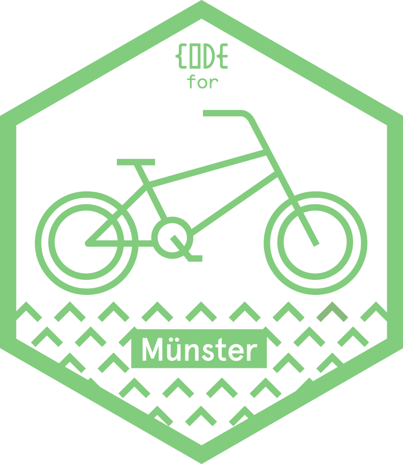
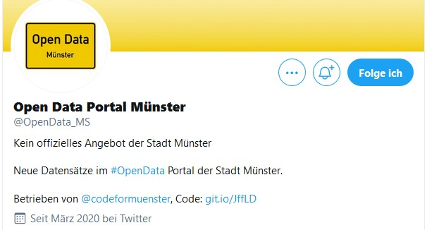
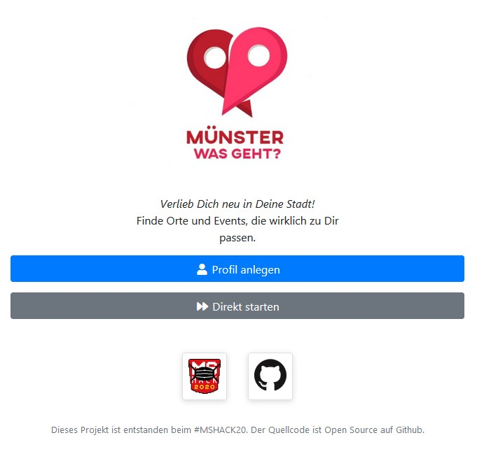
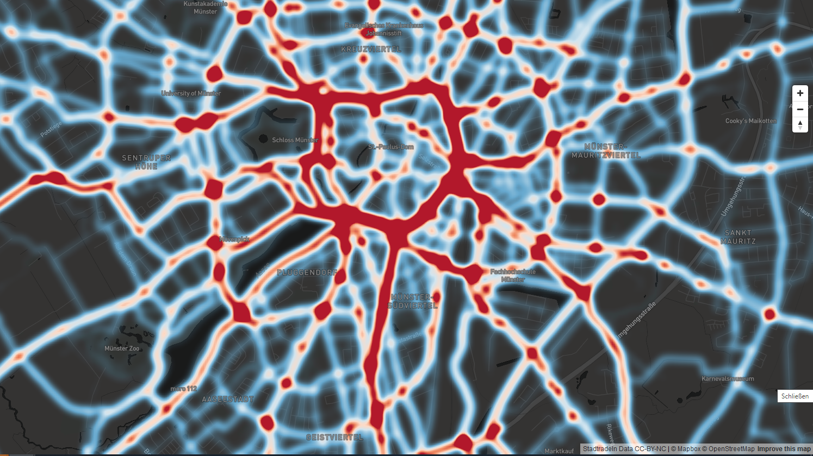
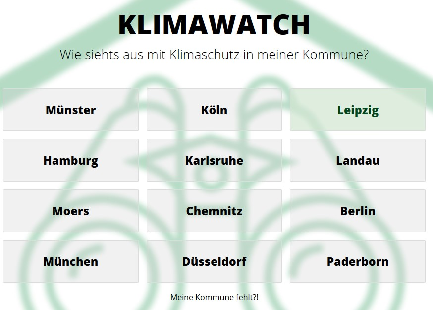
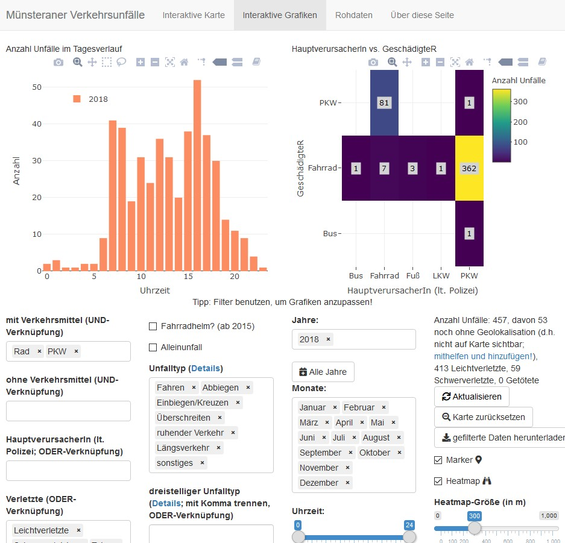
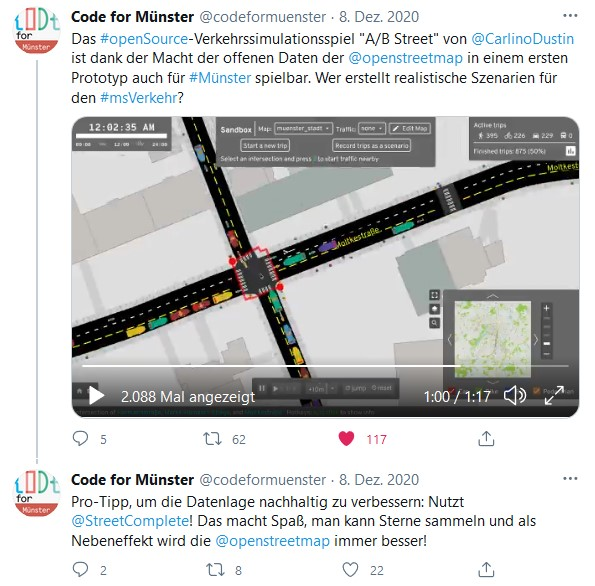
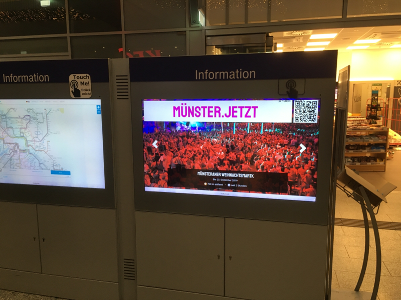
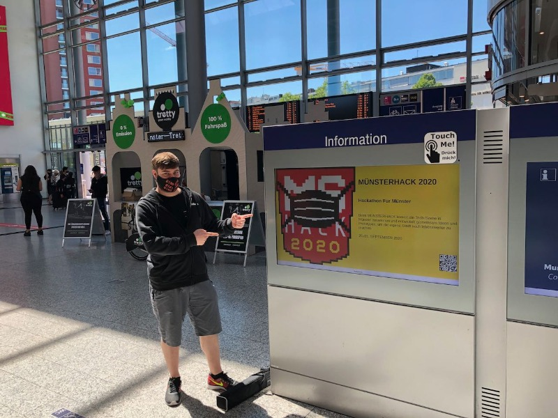

class: center, middle # Civic Tech Projekte in Münster 2020 ## Was lief gut, was lief schlecht?  ??? - Navigieren mit Pfeiltasten - Speakernotes anzeigen mit "P"-Taste Speaker-Reihenfolge: Folie 1+2 TW Folie 3 GP Folie 4+5 TT Folie 6+7 GP Dann TW --- # Agenda 1. Kurz notiert 2. Leezenflow 3. Münster.jetzt 4. Meine Stadt Transparent 5. Fazit & Idee 6. Diskussion --- # Kurz notiert 1/2 .left-column[    ] .right-column[ #### 1. Open Data Münster Twitter Bot 👍 Seit März 2020 automatische Tweets bei neuen Daten im open-Data-Portal [(Quellcode)](https://github.com/codeformuenster/dkan-newest-dataset-notifier)<br/> .projectLink[Link: [https://twitter.com/OpenData_MS](https://twitter.com/OpenData_MS)] #### 2. Münster was geht? 👎 Münsterhack 2020: Veranstaltungsempfehlungen a la Tinder, powered by open-data<br/> .projectLink[Link: [https://demo.muenster-was-geht.de/](https://demo.muenster-was-geht.de/)] #### 3. Stadtradeln-Visualisierung 👍 Eine Stadt mit vielen RadfahrerInnen<br /> .projectLink[Link: [https://codeformuenster.org/stadtradeln-vis](https://codeformuenster.org/stadtradeln-vis)] ] --- # Kurz notiert 2/2 .left-column[    ] .right-column[ #### 4. Klimawatch update 👍 Klimawatch: 9 neue Städte, 3 in der Pipeline, Hilfe gern gesehen .projectLink[Link: [https://www.klimawatch.de](https://www.klimawatch.de)] #### 5. Update der Unfall-Visualisierung 🤞 Unfallvisualisierung mit Daten seit 2007; leider ab 2019 nur Daten mit weniger Details vom Unfallatlas NRW .projectLink[Link: [https://crashes.codeformuenster.org](https://crashes.codeformuenster.org)] #### 6. AB-Street 🤞 Wie wäre es, wenn ich hier die Ampelschaltung ändere? Verkehrsplanung als Computerspiel .projectLink[Link: [Mehr Infos auf Twitter](https://twitter.com/codeformuenster/status/1336421089153609728)] ] --- # Leezenflow 👍 .left-column[  ] .right-column[ - Idee vom Münsterhack 2019 - Aufgenommen durch Smart City Münster - Design durch Leonie Winkelmann & Magdalena Schmitz im Rahmen einer Bachelorarbeit erstellt - Prototyp & Evaluation ab Frühling 2021 in Münster - Viel ehrenamtliche Arbeit, aber auch viel hauptamtliche Arbeit nötig .projectLink[Link: [http://www.leezenflow.de](http://www.leezenflow.de)] ] --- # Münster.jetzt 👍 .left-column[   ] .right-column[ - Ursprünglich Projekt vom Münsterhack 2019 - Wurde aufgenommen bei "Zukunftsbahnof Münster" 2020 - Termine auf Info-Bildschirmen am Bahnhof ausspielen - Software-Prototyp wurde gebaut, Umsetzung wurde von der DB gefördert .projectLink[Link: [https://muenster-jetzt.de/info](https://muenster-jetzt.de/info)] ] --- # Meine Stadt Transparent: Ratsinformationssystem für Menschen 🤞 .left-column[  ] .right-column[ - Hohe technische Anforderungen - Komplexes Scraping des Ratsinformationssystems - [OParl](https://oparl.org) wird endlich beauftragt - Ehrenamt schon lange fertig, Hauptamt verzögert .projectLink[Link: [https://meine-stadt-transparent.codeformuenster.org](https://meine-stadt-transparent.codeformuenster.org)] ] --- # Fazit aus den Projekten 2020 <div class="happy box"> .label[Gute Voraussetzungen für ein langfristig laufendes Projekt] - Daten verfügbar - Einfache Technik - Engagiertes Team - Kooperationen (Uni, FH, Stadt, ...) - Unternehmen, das das Thema übernimmt - Förderung / Sonstige verfügbare Geldmittel </div> <div class="moody box"> .label[Showstopper] - Daten nicht verfügbar - Technik zu komplex - Projekt-Team hört auf </div> --- # Idee für Verstetigung * Jedes Projekt ist individuell * Es braucht einen festgelegten Rahmen * Und verlässliche Partner, auf deren Schultern die Verantwortung verteilt wird * ..und Unterstützung bei der "Partnersuche" ### Projekt "Digitale Spielwiese" (Arbeitstitel) Ein Gremium wird geschaffen. Dieses Gremium wählt Projekte aus und sucht (externe) "Paten" für die Projekte. Für jedes Projekt muss es drei Paten geben: * "Technischer Pate" * "Inhaltlicher Pate" * "Monetärer Pate" --- # Diskussion - Wie können Civic-Tech-Projekte verstetigt werden? - Was ist essentiell für die Unterstützung? --- # Vielen Dank! Mehr Informationen: * Code For Münster - https://codeformuenster.org * Open Data Münster - https://opendata.stadt-muenster.de * Smart City Münster - https://www.smartcity.ms Bei weiteren Fragen kontaktieren Sie gern die Open-Data-Koordination der Stadt Münster: Thomas Werner opendata@stadt-muenster.de Tel. 0251/492-1909